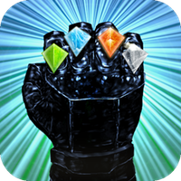

GEO 1.0
GEO is a hybrid exercise tool / video game for the iPhone. The goal of GEO is to get you off the couch and moving! Fight monsters, burn calories, earn experience, power-up new weapons -- all in preparation for the final battle.
Find us online
The Team
GEO has been a group collaboration, the inaugural project of the Ship It Society.
- Mike Zornek (@zorn), Project Manager / Programmer — Responsible for the overall design, implementation of game mechanics and battle view.
- Joe Walsh (@joein3d), Programmer — Responsible for the map view and GPS tracking.
- Matt Thomas (@mthomas), Programmer — Responsible for much of the Core Animation in addition to helping out with the sound system.
- Kotaro Fujita (@wild37), Game Culture Wizard, — Originally on the team for sound design Kut has also helped with art assets and written much of the lore for the game world.
- Phil Dahl, Artist — Responsible for monster designs.
- Johnny Bilotta (@johnnynines), Designer — Helped out with early battle visualization and log book themes.
Acknowledgements